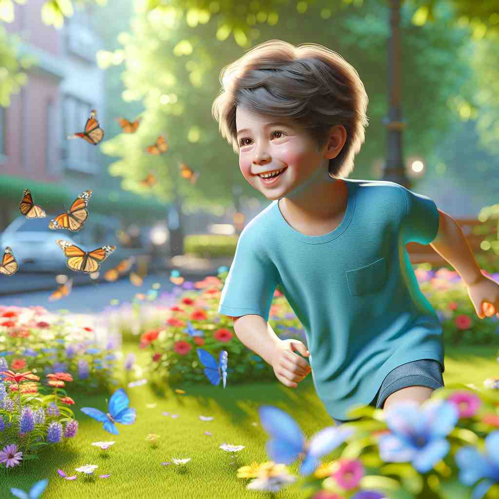

💬 The hot air balloon floats in the blue sky. 热气球漂浮在蓝天之中。

💬 The boy is wearing a blue shirt while he runs in the flower garden. 男孩穿着蓝色衬衫，在花园里奔跑。
💬 The hot air balloon floats in the blue sky. 热气球漂浮在蓝天之中。
💬 The boy is wearing a blue shirt while he runs in the flower garden. 男孩穿着蓝色衬衫，在花园里奔跑。
🔈 [bluː]
💬 The sky is blue. 天空是蓝色的。
🔍 蓝色的: 你抬头看天空，晴天的时候，天空的颜色就是蓝色，就像你画画用的蓝色蜡笔的颜色。
💬 My favorite shirt is blue. 我最喜欢的衬衫是蓝色的。
🔍 蓝色的: 你的衣柜里有很多衣服，其中有一件衬衫的颜色是蓝色，就像大海的颜色。
💬 The ocean is blue. 大海是蓝色的。
🔍 蓝色的: 你去海边玩，看到的大海的颜色就是蓝色，就像你的蓝色水彩笔画出的颜色。
💬 Blueberries are blue. 蓝莓是蓝色的。
🔍 蓝色的: 你吃蓝莓的时候，看到的蓝莓的颜色就是蓝色，就像你的蓝色颜料的颜色。
🧠 “blue” 指的是一种颜色，就像天空、大海、蓝莓的颜色。
⬅️ sky blue（天蓝色）、navy blue（海军蓝）：这些都是蓝色的不同种类，就像你的蓝色蜡笔盒里有很多种不同的蓝色。
🔀 red（红色）、yellow（黄色）、green（绿色）：这些都是与蓝色不同的颜色，就像你的彩色蜡笔盒里除了蓝色还有其他颜色。
🌳 基本形式为形容词，没有前缀或后缀修饰，源自古英语 "blǣwen" 和古法语 "bleu"，表示颜色 "蓝色"。
💡 可以通过联想大海、天空等常见蓝色的自然景象，帮助记忆蓝色的颜色形象。
🗝️ adj. sad or depressed 伤心或沮丧
🎭 一个雨天的下午，咖啡馆里，一位年轻人独自坐在角落，透过窗户默默地看着外面淅淅沥沥的雨，他的表情显得有些blue，仿佛有很多心事。
💬 He's been feeling blue since he lost his job. 他自从失去工作以来一直感到沮丧。
🤔 蓝色常与忧郁情绪联系
🗝️ adj. relating to pornography or indecent behavior 与色情或不当行为有关
🎭 一家音乐商店外的公告板上，贴着一张乐队海报，下面醒目地标示着：'建议成人观看'，这是因为他们的表演有一些blue的元素。
💬 The comedian told some blue jokes that shocked the audience. 这位喜剧演员讲了一些粗俗的笑话，让观众感到震惊。
🤔 源于蓝色电影胶片的联想
🗝️ adj. unexpected or unlikely 意外或不太可能
🎭 在一个激烈的辩论赛中，一名选手以机智的反驳赢得了全场掌声，她的精彩表现真的是out of the blue，让人始料未及。
💬 She won the lottery out of the blue. 她突如其来地中了彩票。
🤔 源自"蓝月亮"的罕见现象
🗝️ adj. loyal or faithful 忠诚或忠实
🎭 在军队的授勋仪式上，一位士兵骄傲地站在队列中，他被称赞为对国家的blue，因为他的忠诚与奉献。
💬 He's a true blue supporter of the team. 他是球队真正的忠实支持者。
🤔 源自英国政治中保守党的蓝色标识
🗝️ v. to become depressed 变得沮丧
🎭 一名学生在繁忙的考试季中感到压力山大，面对桌上堆积如山的书本，他忍不住blue，似乎怀疑自己能否应付得来。
💬 She tends to blue when winter comes. 她在冬天来临时容易感到沮丧。
🤔 由形容词衍生的动词用法